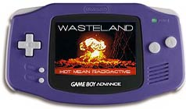

1. Here is a listing of the binaries (official computer term for "executable program") available here for download. Admittedly, there are not many; if you have a Wasteland-esque binary you'd like me to post (NOT including original game programs, for those of you who will ask), send it on to me! I'll be happy to upload it here for Rangers world-wide to download.
2. Also here are links to other Wasteland-related projects with homes on the Internet. There are several home-made Wasteland games, or Wasteland-esque games under construction by dedicated Rangers around the globe. Since at many of these sites binaries are available for download, for either game-play or for helping with the co-creation of the game, I thought links to these games were appropriately placed here.
Disclaimer: I do not purport that the helper applications or charater downloads run or run correctly on any system. I have not thoroughly tested them. Therefore, use at your own risk and with Geiger Counter in hand! The Wasteland Ranger HQ-Grid will not be held liable for any screwed-up game files. If you are smart, you'll make copies of your files before you start hacking them!

Unofficial Wasteland Reset Program [IBM-PC]
Short description: A home-made utility to simulate the functionality of setup.exe, one of the original Wasteland game files, which allows one to reset the maps or characters.
Full description: See Unofficial Wasteland Reset Program.
Download location: jwlreset.zip (PKZip, 25 Kb)
Wasteland Character Editor [IBM-PC]
Short description: A home-made utility to edit Wasteland characters.
Commentary: Ranger Nepomuceno checked in to report that the characters should be in the main Wasteland Map (outside the towns) for this character editor to work.
Download location: wlcharedit.zip (PKZip, 48 Kb)
Wasteland Supreme Jerk Characters [IBM-PC]
Description: Ranger Christian Simms submits a band of seven rangers, all with the rank of Supreme Jerk! Download this file which contains the binary data for this group, which you can merge into your own game of Wastaeland using the Reset Program above. If you ever wanted to see for yourself a Supreme Jerk, but didn't have the endurance to reach this rank yourself, check this out!
Download location: wl_chars.zip (PKZip, 3 Kb)
A Mostly All Badass NPC Party [IBM-PC]
Description: Ranger Shooter J submits this band of NPC Rangers, assembled and inserted into a fresh instance of the game. Here's what he has to say:
When I first played this game on C64, I used the disk-switching "cheat" to make a party of all NPCs. I wanted to see how I could do If I wasnt permitted to go full-auto whenever I wanted. Well, I got "Ultimate RPG archives" and used the edit command to make another all NPCs party. I've started them out on a fresh file (nothing has been touched) and they have all the best items. (You can drop them for more fun, of course.) This one has mostly all badass NPCs, except Dan Citrine, but I've found that if you take some of the weaker NPCs "all the way" they turn out to be pretty cool. (especially JACKIE and FELICIA, believe it or not!) Have fun with the file. Just install Wasteland, delete the "GAME1" file, paste the attached file, and rename it "GAME1".
There you have it, have fun! I loaded it myself, and it looks like all the characters are indeed "bad-ass," as they each tote power armor and a proton ax. GROOVY.
Download location: game1_sj.zip (PKZip, 128 Kb)
Apskaft Super Character [Windows 95 and up]
Short description: A Sweedish Ranger sent me a super-character for you to enjoy. Just follow the instructions in the file_id.diz file, and test it for yourself!
Download location: apskaft.zip (PKZip, 1Kb)
Multi-player Wasteland [Windows]
Short description: a freeware multi-player post-nuclear computer role-playing game inspired by Wasteland, being developed under the leadership of "Radioactive Rodent."
Project Home Page: http://www.geocities.com/radioactive_rodent/index.html [inactive as of June 2004]
Newcomer [Commodore 64]
Short Description: a Wasteland-inspired game programmed by some Hungarian Rangers!
Commentary: While Newcomer isn't a Wasteland prequel, sequel, or even in the same post-nuclear war genre, this dedicated team of Hungarian programmers put together a nice game for the C64 platform, that was inspired in part by Wasteland. Originally I beta-tested their earliest versions, and they publicly acknoweldge me (see the "Creation" sub page) and link to the HQ-Grid, for which I am very grateful. I have kept in touch with them over the years and am happy to provide a link here where you might browse the Newcomer home page and download the binaries for your own gaming fun.
Project Home Page: http://www.newcomer.hu
The Revival of the Wasteland [any platform with a Java Runtime Environment]
Short description: a single-player game based on the original Wasteland, being developed under the leadership of Martin Gutenbrunner.
Project Home Pages:
- http://www.revival.at.tt/ [original location, offline]
- http://members.yline.com/~martingu/revival/
- Wasteland Wiki

Wasteland Advance
[Gameboy Advance]
Project Home Page:
- http://theflangynews.editthispage.com/stories/storyReader$944 [original location, offline]
More Commentary: The best April Fools' Joke ever!!! Sadly, the original site is gone and I lost my local archive of it. Does anyone else have it?
Wasteland Zero
[IBM-PC]
Commentary: The first of the home made Wasteland games that came to the attention of the HQ-Grid, Wasteland Zero was a college project put together by Ranger Quan Thai and his friends. Here's what Quan originally wrote about the project.
Basically, its supposed to be a pre-quel to Wasteland -- explaining the events that led to the apocalypse. [We] currently have a rough beta that is on my homepage. We've got an editor (Windows-based) and the game engine (DOS-based but can run under 95) so you can create maps/events in the editor and see the effects in the engine. Also, the game and editor is being released under the GPL so anyone can play with the source code and hopefully speed up development. Try it out, and let me know what you think ...
Sadly, it does not appear that any progress has been made on this game since 1999, and in addition both the Internet locations for this fan-based Wasteland sequel are now offline. I did get an e-mail from one of the developers back in September of 2002, who said:
Well, Wasteland Zero didn't get as far as we expected, everyone pretty much finished junior project, eventually graduated, and then moved on and got good jobs. That was 1999. Now we are all out of work and resuming work on Wasteland Zero!! We are throwing out loads of old code, (including those crappy open source graphics routines that kept it from running in anything buy a 98 dos window) and making ita actual PROJECT FOR FUN instead of a good example of object oriented design, and things are going MUCH BETTER!!! (Yet somewhat uglier code-wise) Anyway, Quan's legacy Wasteland Zero page is located here UPDATE YOUR LINKS!: http://www.quanthai.com/~wland0/ We don't plan on updating that page, its our legacy stuff, but maybe there will be more info posted on techgoon.com or wilx.org, spacenacho.com or even jollython.com (The sites of the other writers and artists and remenents of the old project team! :) - Beta Tester, Artist and "Tile Thief", Wil PS: Our latest editor MAY be on quanthai.com soon with loads of new tiles and an ACTUAL FUNCTIONAL event trigger menu. Thank you very much for providing so many wasteland resources online!
In May 2004, I received word from Quan that the project was indeed dead.
Hi Ben. Wow, talking about memories ;-) Anyway, I'm sad to announce that the project has been discontinued due to lack of interest. I still have the code (and all the corresponding documentation) on a CD somewhere. If there are still some souls out there that are interested in it, I can post it ... Thanks.
Project Home Pages:
- http://internet.oit.osshe.edu/~thaiq [original location, offline]
- http://www.quanthai.com/~wland0/ [second home, offline]
- Front Desk
- Comm Center
- Underground
- Reading Room
- ⇒ File Room
- End Status
- Rec Center
- Site Graphics
- Links

This webpage complies with the W3C XHTML standards.